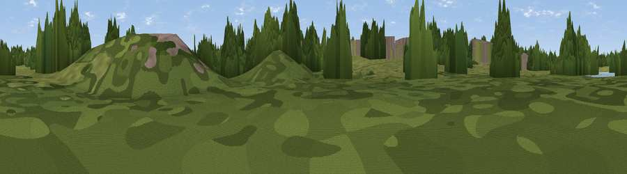

Stanborough Reedmarsh
#45975 in England · top 91% of its area beats it · near StanboroughThe view, rendered

A 360° render of this exact spot computed from the terrain model, tree cover and land cover — summer colours, afternoon light, calibrated against photographs of famous viewpoints. Real trees, hedges and buildings will differ in detail.
The panorama
Grey silhouette: terrain skyline in each direction (720 bearings, Earth curvature and refraction included). Dashed green: skyline with trees (+15 m) and buildings (+8 m) as obstacles. Blue strip: how far the ground is visible on each bearing.
Where the view opens
Wedge length = distance to the farthest visible ground on that bearing (vegetation-aware). Rings at 10, 25 and 50 km.
What fills the view
48% grassland · 37% woodland · 12% built-up · 2% cropland · 1% water
Angular shares of the visible panorama (visual magnitude), not map area. Landscape diversity 0.49 (0–1 Shannon).
Key numbers
More beautiful places nearby
The staircase of upgrades: each row has a higher view potential than everything closer. Driving times are estimates from straight-line distance, calibrated against real road routing — check an actual route before setting out.
| Place | Direction | Drive | Score |
|---|---|---|---|
| Viewpoint near Stanborough | NNE · 1 km | ~3 min | 38.6 |
| Viewpoint near Thundridge | ENE · 13 km | ~24 min | 40.8 |
| Highwood Hill | S · 16 km | ~29 min | 46.3 |
| Wood Farm London Viewpoint | SSW · 18 km | ~31 min | 49.2 |
| Warden Hill | NW · 21 km | ~35 min | 57.3 |
| Viewpoint near Hexton | NNW · 22 km | ~37 min | 65.4 |
| Viewpoint near Church End | WNW · 25 km | ~40 min | 65.8 |
| Viewpoint near Ivinghoe | WNW · 28 km | ~44 min | 66.7 |
51.77958, -0.21665 · source: osm viewpoint · position refined by local search. Computed location — check access rights before visiting.